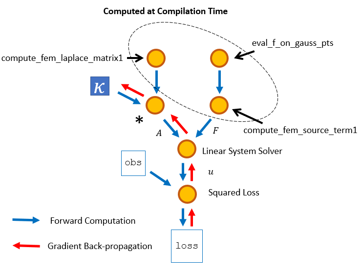

PoreFlow.jl Documentation
PoreFlow is an open-source package that accompanies ADCME.jl for solving inverse problems involving partial differential equations (PDEs). PoreFlow provides users a rich collection of operators, which users can use to quickly build finite element/volumn codes for forward computation. More importantly, these operators can back-propagate gradients, and therefore users can calculate the gradients using the ideas of adjoint methods and reverse-mode automatic differention (these two concepts overlap). The advanced physics constrained learning (PCL) approach enables users to back-propagate gradients through iterative and nonlinear solvers efficiently. PoreFlow offers a flexible interface for experienced researchers to develop their own operators.
Expressing Numerical Simulation as a Computational Graph
As an example, we consider solving the Poisson's equation $\nabla \cdot (\kappa\nabla u) = f, \mathbf{x}\in \partial \Omega; \qquad u(\mathbf{x}) = 0, \mathbf{x}\in \partial \Omega$ Here $\kappa$ is an unknown parameter, which we want to estimate. The corresponding variational form is $\int_\Omega\kappa \nabla u\cdot \nabla vdx = - \int_\Omega fv dx$ In PoreFlow, consider a $(m+1)\times (n+1)$ uniform grid with step size $h$, the finite element solution can be expressed as
κ = Variable(1.0)
A = κ * compute_fem_laplace_matrix1(m, n, h)
F0 = eval_f_on_gauss_pts(f, m, n, h)
F = compute_fem_source_term1(F0, m, n, h)
sol = A\F In the inverse problem, we formulate the loss function as the difference of the solution vector sol and observations obs at the indices idx
loss = sum((sol[idx] - obs[idx])^2)Note at this point, only the part of the computation that does not depend on $\kappa$ is carried out (partial evaluation), and the evaluation of sol is deferred to a later stage. The numerical computation for the partial evaluation is done using Julia and at compilation time. This eliminates much overhead for the optimization phase because only the variable part of the computational graph is executed many times.

The computational graph is constructed implicitly, and users can calculate the gradients, whose computation is also deferred, using
gradients(loss, ν)To trigger the executation of the computational graph, users can run
sess = Session(); init(sess)
run(sess, loss)The optimization is a one-liner thanks to the ADCME backend:
BFGS!(sess, loss)Coupling Deep Neural Networks and PDEs
Because of the novel idea of expressing numerical simulators as computational graphs, it is extremely easy to coupled deep neural networks or other parametric models with partial differential equations. For example, if we want to use a deep neural network to approximate a spatially-varying $\kappa(\mathbf{x})$, we can use the following codes as a drop-in substitute
x = gauss_nodes(m, n, h)
κ = fc(x, [20,20,20,1])
A = compute_fem_laplace_matrix1(κ, m, n, h)Installation
To install the latest version of PoreFlow, try
julia> ]
pkg> add https://github.com/kailaix/PoreFlow.jl#master
pkg> build PoreFlow